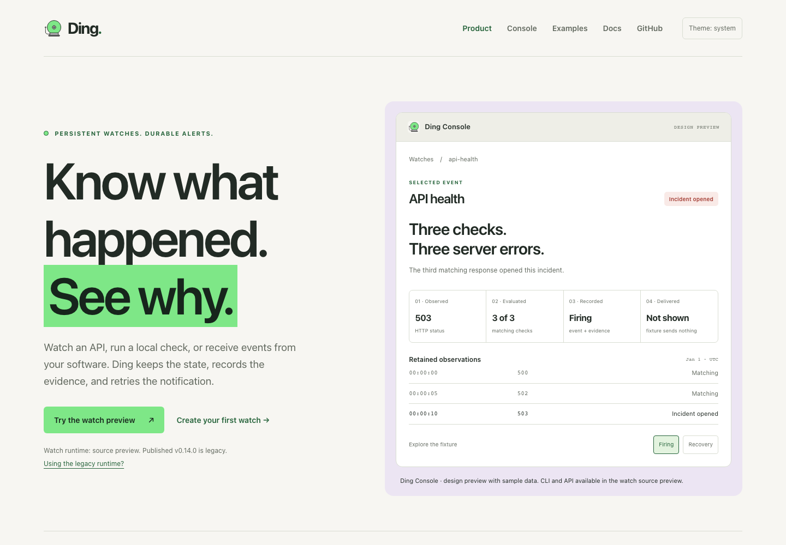

Keep the bell.
Recovered original SVG paths, including the round gong, side striker, and mounting base. The same artwork now appears across all three surfaces.
Brand & interface draft / 09 October 2026
LOCAL DESIGN REVIEWThe original bell. The original green.
The fire-alarm bell is back, with its original #7EE787 green. Warm ivory, graphite, soft violet, and amber give it room to work.
One visual language for the website, the console, and the docs.
The original green leads. Violet frames the product; warm neutrals carry the story.

Actual website build. Product illustration uses sample data.
View full size ↗Recovered original SVG paths, including the round gong, side striker, and mounting base. The same artwork now appears across all three surfaces.
Bright green with dark text for actions. Pine green for links on ivory. Original green for links on graphite. Clear contrast in either theme.
Coral for incidents, amber for attention, violet for unknown. Every operational state has a text label; brand color alone never means healthy.